About Me
I am a PhD student in Planetary Sciences at the School of Earth and Planetary Sciences (SEPS), National Institute of Science Education and Research (NISER), working under the supervision of Dr. Liton Majumdar.
My research lies at the intersection of ALMA observational analysis, protoplanetary disks, and astrochemistry. I focus on the formation and evolution of planets within protoplanetary disks, the birthplaces of exoplanets. By utilizing high-resolution observations from the Atacama Large Millimeter/submillimeter Array (ALMA) in Chile, I investigate the intricate physical and chemical environments of these planetary nurseries.
Research & Development
Evolutionary Origin of Planets
Core FocusWith over 6,000 exoplanets discovered, my aim is to bridge the gap between the initial conditions in protoplanetary disks inherited by nascent planets and the diverse characteristics of mature planetary systems and draw inferences on planet formation theory.
ALMA Observation Analysis : DRive
Ongoing ProjectMy expertise lies in ALMA observational analysis. To facilitate my work, I have developed DRive, a Python based disk retrieval package comprising a comprehensive suite of tools that streamline the retrieval, processing, and visualization of data from protoplanetary disk observations. It is designed to extract the physical and chemical conditions in the planet-forming regions of disks, leveraging the extensive ALMA data archive.
Astrochemical Modelling of Disk : PEGASIS
Ongoing ProjectAs part of the development team and an active maintainer of the 3-phase astrochemical code PEGASIS, I specialize in simulating chemical evolution in molecular clouds (0D) and protoplanetary disks (1+1D). My research leverages these chemical models to gain deeper insights into the physical conditions and chemical pathways driving disk evolution.
Publications
Unveiling the Chemical Complexity and C/O Ratio of the HD 163296 Protoplanetary Disk: Constraints from Multiline ALMA Observations of Organics, Nitriles, and Sulfur-bearing and Deuterated Molecules
The Astrophysical Journal Supplement Series, 2026Authors: Parashmoni Kashyap, Liton Majumdar, Edwin A. Bergin, Geoffrey A. Blake, Karen Willacy, Stéphane Guilloteau, Anne Dutrey, Sheng-Yuan Liu, Thomas Henning, Paul F. Goldsmith, Dariusz C. Lis, S. Maitrey, Neal Turner, Raghvendra Sahai, Chin-Fei Lee, and Masao Saito
Chemistry in the GG Tau A Disk: Constraints from H2D+, N2H+, and DCO+ High Angular Resolution ALMA Observations
The Astrophysical Journal, 2024Authors: Parashmoni Kashyap, Liton Majumdar, Anne Dutrey, Stéphane Guilloteau, Karen Willacy, Edwige Chapillon, Richard Teague, Dmitry Semenov, Thomas Henning, Neal Turner, Raghvendra Sahai, Ágnes Kóspál, Audrey Coutens, V. Piétu, Pierre Gratier, Maxime Ruaud, N. T. Phuong, E. Di Folco, Chin-Fei Lee, and Y.-W. Tang
Conferences
Exploring Exoplanets: The Journey to Discover New Frontiers and Habitable Worlds
International Centre for Theoretical Sciences, Bangalore, India | March 2026Oral Presentation: "The Birthplace of Giant Exoplanets : Unveiling Disk Physics and Chemistry in HD 163296"
Origins of Solar Systems: Gordon Research Conference
Mount Holyoke College, South Hadley, MA, USA | June 2025Poster Presentation: "Probing the Cold Midplane of GG Tau A: Insights from High-Resolution ALMA Observations of H2D+ , N2H+ , and DCO+"
Strange New Worlds: The Exploration of Exoplanets
Indian Institute of Science Education and Reserach Pune, India | August 2023Oral Presentation: "The Emergence of Life Forming Molecules in Planet Formation"
41st meeting of The Astronomical Society of India
Indian Institute of Technology Indore, India | March 2023Poster Presentation: "Investigating the Origin of Prebiotic Molecules in Early Stages of Planetary Evolution"
Highlights
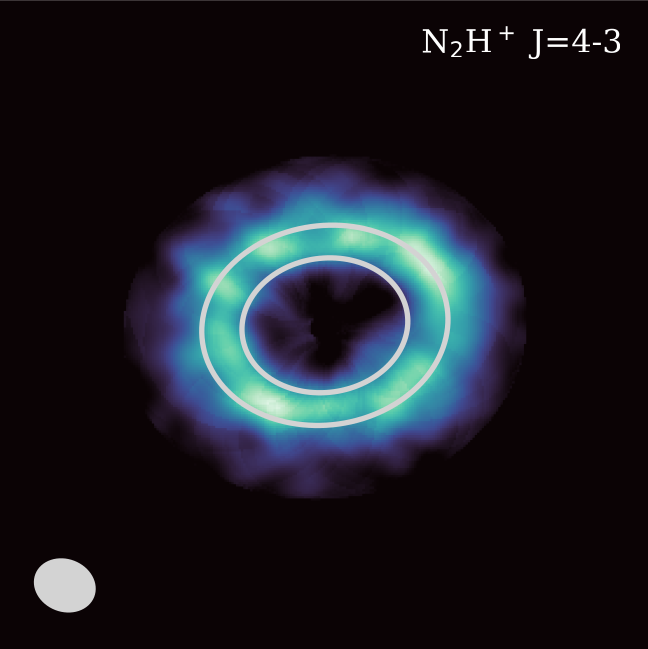
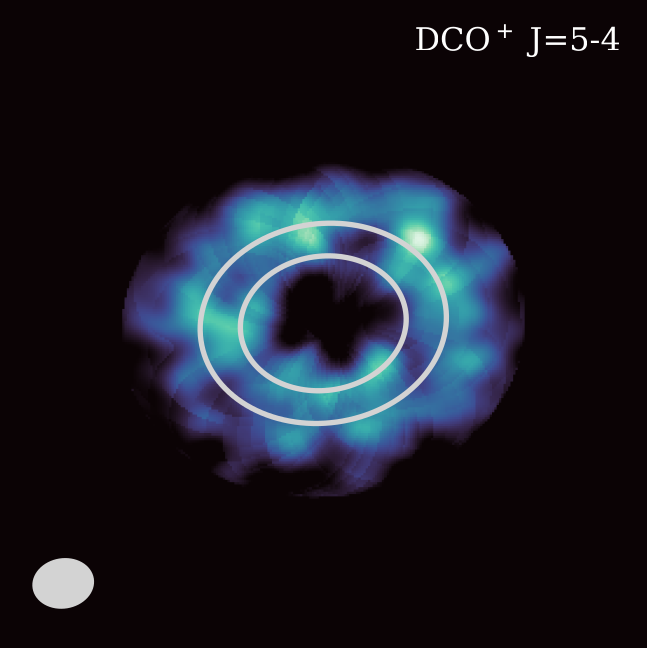
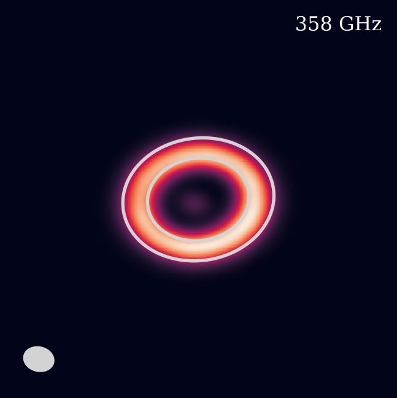
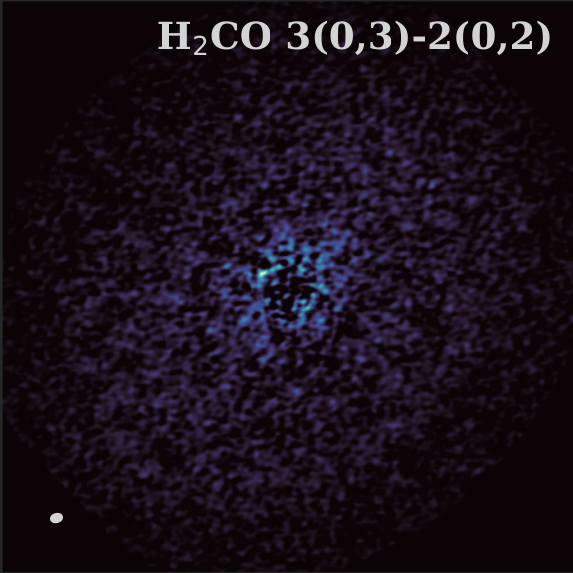
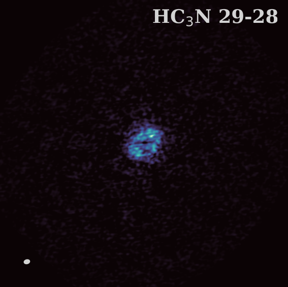
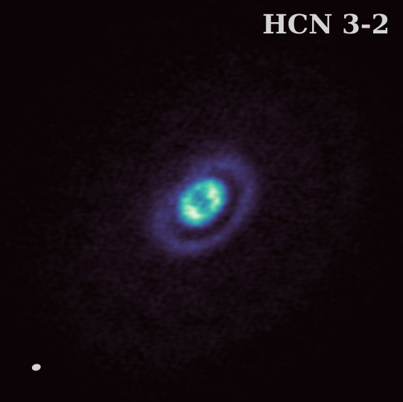
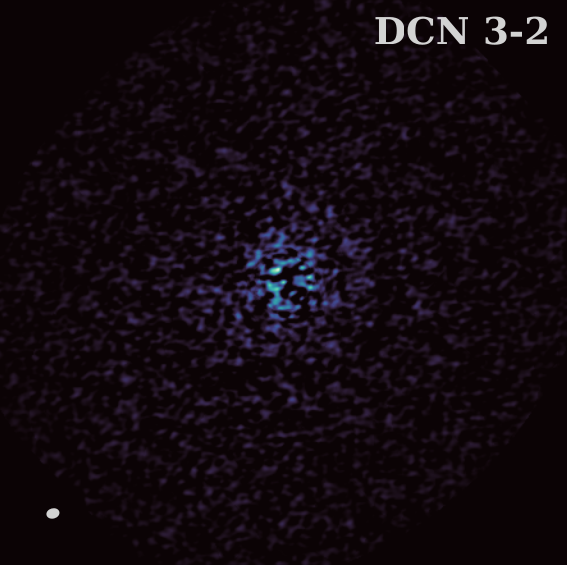
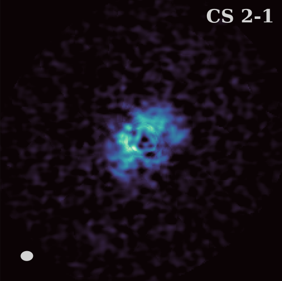
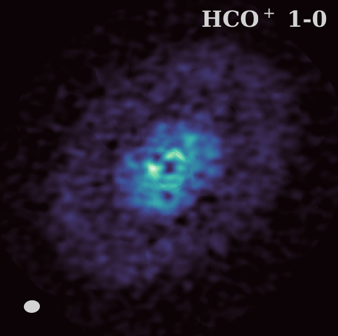
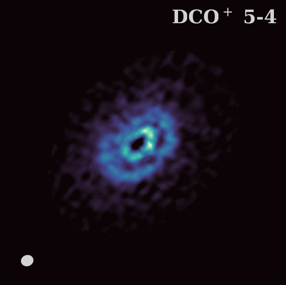
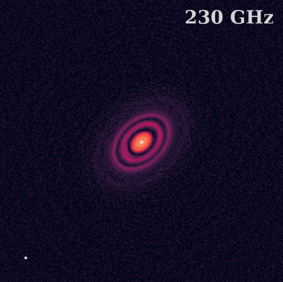
Contact
-
Institution
National Institute of Science Education and Research (NISER) Bhubaneswar, Jatini,
Odisha-752050, India - Email (Primary) kashyapparashmoni@gmail.com
- Email (Academic) parashmoni.kashyap@niser.ac.in
- ORCID 0009-0008-2350-5876
- LinkedIn parashmoni-kashyap-16455a142
- GitHub ParashmoniKashyap